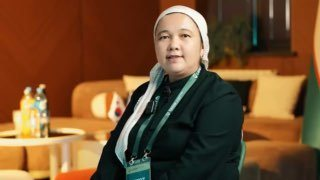

6 yoş
6 yoşPre-School
Boğçadan keyingi böş yil emas, poydevor yili. Bola 1-sinf davlat dasturini tugatadi va kuçli ingliz tili bilimiga ega böladi.
IT va ingliz tiliga ixtisoslaşgan xususiy maktab: Pre-School va 1–8-sinflar. Birinçi yilning özidayoq respublika TOP-10 maktablari qatorida.
Har bir bosqiçning öz maqsadi bor: poydevor, mustahkam bilim va xalqaro imtihonlarga tayyorlik.
6 yoşBoğçadan keyingi böş yil emas, poydevor yili. Bola 1-sinf davlat dasturini tugatadi va kuçli ingliz tili bilimiga ega böladi.
 1–4-sinflar
1–4-sinflarTayyor javob berilmaydi: bola özi izlanadi, topadi va amalda sinab köradi. Şunda bilim yodda emas, ongda qoladi.
 5–8-sinflar
5–8-sinflarIT, matematika va ingliz tili çuqurlaştiriladi. Olimpiadalar, loyihalar va iqtidorli öquvçilar uçun grant tizimi.
Kompyuter sinfida amaliy darslar. Bola texnologiyadan foydalanibgina qolmay, uni yaratişni örganadi.
Ingliz tili har kuni, Pre-School'dan boşlab. Darsda örganiladi, hayotda işlatiladi.
Dunyo universitetlariga yöl: SAT natijasi va AP fanlari böyiça tizimli tayyorgarlik.

100 nafar öquvçini SAT Math'da 700+ natijaga olib çiqqan, 200 dan ortiq öquvçining universitetga kirişiga yordam bergan.
Maktab 2026-yil sentyabrda oçildi. Natijalar özi gapiradi.
Olimpiada taşkilotçilari maktabga taşrif buyurib, ğoliblarni taqdirladi va maxsus sovrin topşirdi.
100 mln sömlik fond töliq taqsimlandi. Boş grant: 8-sinf öquvçisi, öqiş butunlay bepul.
Öquvçimiz Nazirjonova Ominahon hal qiluvçi bosqiçga çiqdi.
Mr. Louis Schilder öquvçilar bilan ingliz tilida erkin suhbat qurdi.
Ingliz tili ta'limi sifatini oşiriş uçun rasmiy hamkorlik.
Har şanba ustozlar uçun trening ötkaziladi. Biz bolani röyxatdagi raqam deb emas, alohida şaxs deb köramiz.

"Yil öqituvçisi – 2026" ğolibi, 18 yillik tajriba.

IELTS 7.5, Speaking 8.5.

Öyin va amaliyot orqali öqitadi.
27 yillik tajriba.


Pre-School va 1–8-sinflarga qabul oçiq. Örinlar soni çeklangan.
Telefon yoki @ZISaloqa orqali.
2–8-sinflar uçun, jami 3 ta imkoniyat.
Ota-ona va öquvçi bilan.
Muvaffaqiyatli ötganlar bilan.
Oltinköl t., Çinobod köçasi, 7 · möljal: Poçta binosi